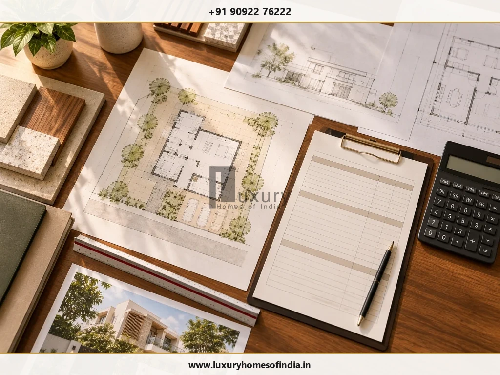
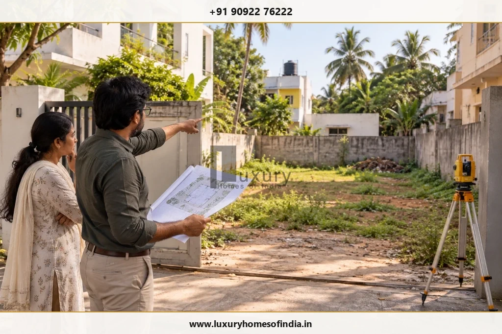

Building plan approval fees in Chennai depend on the property's location, the type and size of the proposed building, the approval route and the charges applicable to the application.
For qualifying residential buildings under Tamil Nadu's self-certification scheme, Government Order No. 94, dated 18 July 2024, publishes a consolidated fee of ₹1,076 per sq. m (approximately ₹100 per sq. ft.) for Greater Chennai Corporation. Other urban local bodies have different published rates.
These figures are reference rates under the specified scheme, not universal charges for every house or villa in Chennai. Larger homes, projects outside the scheme and proposals requiring a different approval process need separate assessment. Before finalising your construction budget, confirm the competent authority, check eligibility and review the current official fee schedule and application-specific demand. This guide explains the main cost components, the approval process and the checks homeowners should complete before construction.
1. What Are Building Plan Approval Fees in Chennai?
Building plan approval fees are statutory charges associated with obtaining the necessary permissions for a proposed construction project. Depending on the property and approval route, the cost may include:
- Building licence or permit fees.
- Planning permission and scrutiny charges, where applicable.
- Development charges.
- Infrastructure and amenities (I&A) charges, where applicable.
- Statutory contributions (such as Construction Workers Welfare Fund).
- Refundable security deposits, where required.
These components do not apply identically to every project. Some consolidated fee schemes include specified charges, while other approval routes may involve separate assessments.
Three Distinct Budget Categories to Keep Separate:
- Statutory charges: Government or local-body fees assessed under the applicable rules and paid directly via official treasury challans.
- Deposits: Amounts payable where prescribed (such as debris or rainwater harvesting deposits), subject to their own refund conditions.
- Professional & documentation costs: Architect or engineer design services, land survey work, drawing packages, and application liaison support.
Use the official demand advice and applicable fee schedule—not a general online estimate—as the basis for payment.
2. Building Plan Approval Fees in Chennai: Published Self-Certification Rates
Tamil Nadu's G.O. (Ms.) No. 94, dated 18 July 2024, sets out consolidated fees for qualifying residential building permissions through the self-certification framework.
Greater Chennai Corporation (GCC) Fee Schedule
For the Greater Chennai Corporation, the published consolidated fee schedule specifies the following line-item breakdown:
| Fee Component | Published Rate (G.O. No. 94) |
|---|---|
| Development charges | ₹15 per sq. m |
| Building licence fee | ₹600 per sq. m |
| Tamil Nadu Construction Workers Welfare Fund | ₹267 per sq. m |
| Road-cut restoration charges | ₹194 per sq. m |
| Total Published Consolidated Fee | ₹1,076 per sq. m |
| Approximate Reference Rate per Sq. Ft. | ~ ₹100 per sq. ft. |
Official Government Order Reference
Read the published fee schedules across urban local bodies in Tamil Nadu:
G.O. (Ms.) No. 94, dated 18 July 2024: Consolidated Self-Certification Fee Schedule →The order's published table gives the consolidated rate for the specified self-certification route. It should not be treated as a universal rate for all building applications or as confirmation that every fee component applies separately to every project.
Other Corporations and Local Bodies
The same order contains separate fee schedules for other municipal corporations (such as Tambaram, Avadi, Coimbatore), municipalities and town panchayats. Their rates differ by local-body category.
Do not use another corporation's rate to estimate a Greater Chennai Corporation application. Equally, do not assume that a property within the wider Chennai metropolitan region is necessarily governed by the same local-body fee schedule as a property within GCC limits.
Before relying on a published rate, confirm the local body, eligibility conditions, current rules and fee basis.

3. Who Is Eligible for Self-Certification?
The published self-certification framework covers specified residential buildings with:
- A plot area of up to 2,500 sq. ft.
- A built-up area of up to 3,500 sq. ft.
- A ground-floor or ground-floor-plus-one-upper-floor configuration (extended to stilt plus two floors under G.O. Ms. No. 118).
The applicable rules also impose other conditions. Meeting the area limits alone does not establish eligibility. Before proceeding, have the proposed development checked for:
- The plot's location and competent authority.
- The applicable land-use and layout requirements (approved layout or pre-2016 regularised plot).
- The proposed building configuration and height (max 10 metres).
- Site boundaries, road access width (1.5 m to 3.0 m) and relevant development restrictions.
- Any additional conditions or documents required by the applicable scheme.
A larger villa, a building with a different floor configuration or a proposal that fails another eligibility condition will follow the regular planning permission scrutiny route.
4. How Much Should You Budget for a Regular House?
There is no single approval-fee figure that reliably applies to every residential property in Chennai. For a proposal outside the self-certification scheme, the relevant authority must assess the application under the applicable rules and fee schedule.
| Budget Category | What to Verify |
|---|---|
| Planning permission | Whether CMDA or GCC planning clearance is required and the applicable rate. |
| Building permit | The competent local body's assessment based on square footage and floor count. |
| Scrutiny & related fees | Applicable fees for digital drawing scrutiny (AutoDCR) and plan revisions. |
| Development charges | Whether and how charges apply based on land area and built-up area. |
| Infrastructure & amenities | Applicability for buildings exceeding specified multi-unit or floor thresholds. |
| Deposits | Amount of debris, rainwater harvesting, or tree plantation deposits and refund criteria. |
| Professional services | Architectural design, structural engineering drawings, documentation, and liaison scope. |
| Site & supporting documents | Total station survey work, soil testing reports, and Patta/TSLR revenue records. |
Request an itemised estimate from your engineering team. It should identify which amounts are statutory, which are professional fees, which are deposits and which remain subject to departmental assessment.
5. CMDA vs GCC: Which Authority Handles Your Approval?
The competent authority depends on the property's location and the nature of the proposed development:
- Chennai Metropolitan Development Authority (CMDA): Planning permission is required for developments within the Chennai Metropolitan Area (CMA), subject to delegated power limits. CMDA oversees regional land use, Master Plan zoning, and multi-storey/commercial developments.
- Greater Chennai Corporation (GCC): GCC processes planning permissions and building permits within its 15 city zones for non-high-rise residential buildings under delegated powers. Its published procedure explains the digital submission, site inspection, demand advice, and permit-issuance stages.
Official Portals & Department Links
Before comparing estimates, confirm whether each proposal covers planning permission, a building permit or both.
6. Worked Example: Estimating a Small House's Reference Fee
Consider a hypothetical residential proposal in Greater Chennai Corporation limits:
- Plot area: 2,000 sq. ft.
- Built-up area: 1,500 sq. ft.
These dimensions fall within the published plot-area and built-up-area limits of the self-certification framework. However, the proposed floor configuration and all other eligibility requirements must also be satisfied.
For illustration, if the relevant fee basis is the built-up area and the applicable reference rate is approximately ₹100 per sq. ft. (based on the ₹1,076/sq. m consolidated rate under G.O. No. 94):
1,500 sq. ft. × ₹100 per sq. ft. = ₹1,50,000 (Indicative Consolidated Fee)
This is a mathematical illustration, not an application-specific quotation or a guarantee of the amount payable. The correct fee basis, eligibility, applicable schedule and current demand must be confirmed before using the figure for financial planning.
Do not automatically add every item in the consolidated fee table to this calculation: that could double-count charges already included in the consolidated rate. Professional services and other applicable expenses should be considered separately according to their actual scope.
7. Are Architect Fees Included in Building Approval Charges?
Architect or registered-engineer fees should be reviewed separately from statutory charges unless the written professional proposal explicitly includes them.
Depending on the agreed scope, professional services may cover:
- Site measurements and preliminary feasibility assessments.
- Architectural concept, space planning and working drawings.
- Structural design calculations and stability certificates.
- Single-window portal documentation, digital signing, and submission.
- Responses to departmental scrutiny queries or site inspection observations.
- Revisions to drawings and supporting documentation.
The scope and price depend on the contract agreed between the homeowner and the professional. Before appointing anyone, request a written breakdown covering deliverables, revision limits, submission responsibilities and excluded expenses. A low initial quotation may not cover the same work as a more comprehensive proposal. Compare scope rather than price alone.
8. How to Check and Pay Building Approval Fees Online
Use the relevant official application portal and follow the 7-step procedure for the property's competent authority:
- Step 1: Confirm the authority. Identify the local body (GCC, CMDA, or DTCP municipality) and determine whether the proposal requires planning permission, a building permit or both.
- Step 2: Prepare property records. Gather registered ownership deeds, revenue patta/TSLR, FMB sketches, survey maps, and architectural drawings certified by an architect or registered engineer.
- Step 3: Prepare and submit the proposal. Register on the Tamil Nadu Single Window Portal, select the correct local body and upload the required PDF packages.
- Step 4: Respond to scrutiny queries. If further information or drawing corrections are requested by the town planning officer, respond promptly through the portal.
- Step 5: Review the demand advice. Check the statutory charges assessed for the application. Confirm the calculation basis and line-item categories before payment.
- Step 6: Pay through the prescribed method. Make the payment via the integrated online treasury/payment gateway and download the formal receipt.
- Step 7: Confirm permit issuance. Download and review the formally issued building permit order and approved drawings stamped with the digital approval seal.
9. Common Mistakes When Budgeting for Approval
- Using another local body's fee rate: Greater Chennai Corporation has a separate published consolidated fee schedule. Confirm the authority before estimating.
- Treating an old schedule as current: Check the official order and application-specific demand at the time of submission to reflect current government notifications.
- Assuming eligibility from plot size alone: Built-up area (≤ 3,500 sq. ft.), floor configuration, road width, and dwelling units also dictate whether self-certification applies.
- Confusing statutory charges with professional fees: Ask for itemized totals so you can evaluate architect/contractor proposals accurately.
- Overlooking deposit conditions: Confirm whether refundable debris or rainwater harvesting deposits apply and what is required for a refund claim after completion.
- Submitting inconsistent property information: Differences between survey details, ownership deeds and drawings complicate scrutiny and cause prolonged delays.
- Assuming an application acknowledgement is an approval: Wait for the formally sanctioned order before mobilising machinery or pouring concrete on site.
10. Approval Budget Planning for a Luxury Home in Chennai
For a bespoke home, approval feasibility should be checked before the architectural concept is finalised. This helps identify potential site constraints before they become expensive design changes.
A practical pre-design review should cover:
- Ownership documents, survey boundaries and verified road access.
- The competent authority (GCC vs CMDA) and applicable planning process.
- Permitted land use and relevant development regulations under TNCDBR-2019.
- Setbacks, height limits and permissible building envelope.
- Proposed floor area (FSI) and floor configuration.
- Special site restrictions and required clearances (water bodies, CRZ, road widening).
- Preliminary statutory cost categories and deposit liabilities.
- The scope of architectural, engineering, soil testing, and approval liaison services.
Features such as basements, swimming pools, large cantilevered elements, extensive upper floors and complex service areas may affect design coordination or approval requirements. Their feasibility must be checked against the actual site and applicable regulations rather than assumed.
A clear feasibility review supports more informed decisions about the relationship between the desired design, the site's constraints and the overall construction budget.

Planning a Custom Luxury Residence in Chennai?
Get an exact assessment of your plot's buildable area, statutory approval fee estimates, and comprehensive turnkey execution roadmap with LHI.
Request an Approval Cost Assessment11. Frequently Asked Questions
12. Conclusion: Transparent Budgeting for Your Chennai Home
Building plan approval fees in Chennai depend on the competent authority, the proposed development, the approval route and the applicable statutory charges. For qualifying residential self-certification applications, G.O. No. 94 provides a published Greater Chennai Corporation consolidated fee reference of ₹1,076 per sq. m, approximately ₹100 per sq. ft. This rate should not be applied automatically to every house, villa or development.
For a more reliable budget, verify the property records, confirm planning feasibility, identify the required approvals and obtain a clear breakdown of statutory charges, deposits and professional fees before construction.
At Luxury Homes of India, the planning stage is an opportunity to consider a home's design ambitions alongside the practical constraints of its site. Homeowners considering a bespoke residence in Chennai can use an early feasibility discussion to clarify their plot, proposed design and approval-related questions before finalising the architectural direction.
Sources and Further Reading
Disclaimer: This article provides general educational information and is not legal, architectural or regulatory advice. The cited rates are published reference rates under a specified government order, not a verified quotation for every application in 2026. Eligibility, fee schedules and procedures may change. Confirm the current applicable rules, official portal instructions and application-specific demand before making financial or construction decisions.